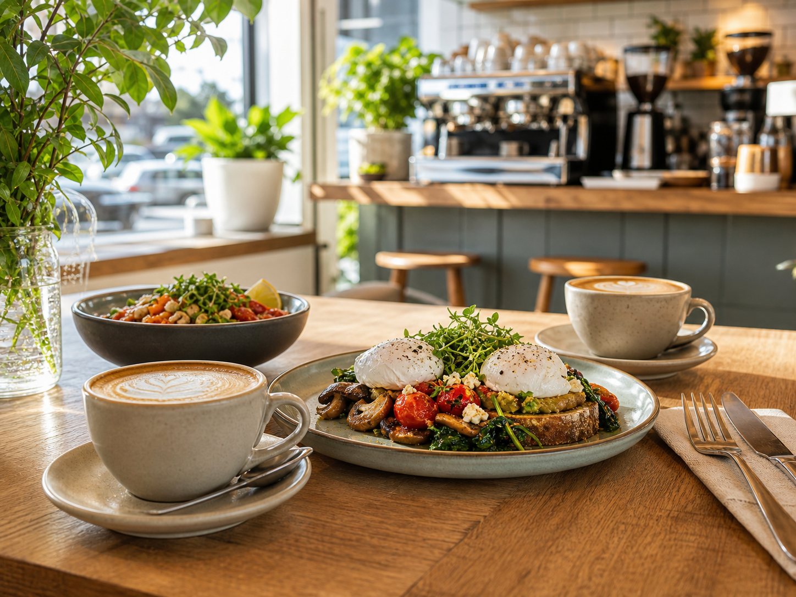

Menu
Breakfast, lunch, toasties, bowls, kids options and cabinet sweets arranged for easy browsing.
Read moreCafe and catering · North Lakes
Corner Table Cafe is a Goodman SEO sample for a local hospitality business. It follows Australian cafe patterns around menus, takeaway, bookings, office catering and functions without copying competitor wording.

Core pages
The page structure is based on Australian competitor patterns, then rewritten as original sample content for Goodman SEO.
Breakfast, lunch, toasties, bowls, kids options and cabinet sweets arranged for easy browsing.
Read more
Specialty coffee, relaxed dine-in tables and weekend brunch copy written for a local audience.
Read more
Office mornings, team lunches, school events and small gatherings with practical enquiry details.
Read more
Casual private functions, birthdays and after-hours gatherings in a bright local venue.
Read moreHow it works
Each sample has enough detail for service pages, local SEO, enquiry intent and sales conversations. The footer keeps the Goodman SEO demo disclosure visible without making the business page feel fake.
Read the service page and check whether the fit is right.
Send an enquiry with the practical details needed for a quote or booking.
Use the site as a starting point for a real buyer with their own details and photos.
Local coverage
These suburbs make the demo feel local. They should be replaced or tightened when a real business buys the site.
Use the form to send the enquiry to Goodman SEO. Phone and testimonials are sample placeholders until a real buyer supplies verified details.